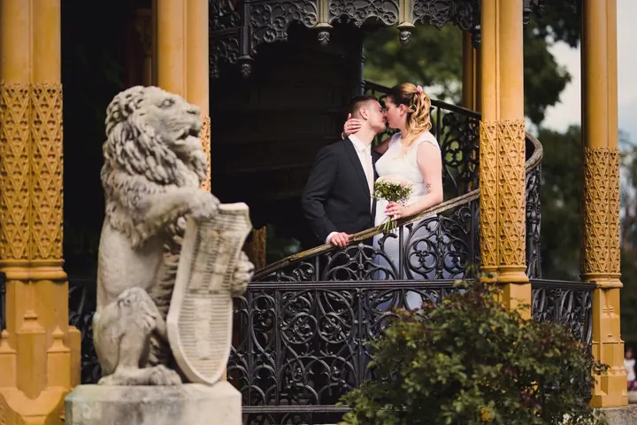
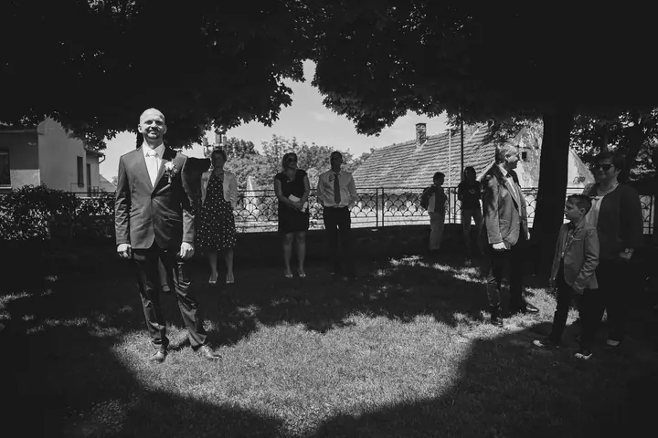
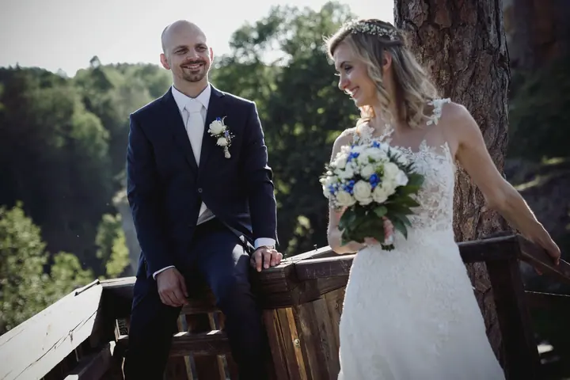
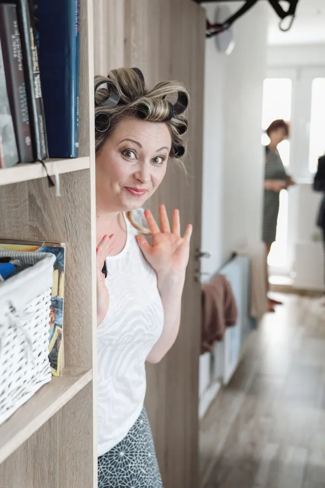

Svatební fotografie
Fotím celé svatby i jejich části, v pohodě a bez strojeného pózování. Na svatbu přivezu i fotokoutek s fototiskárnou a Instax na okamžité fotky.





Jmenuji se Tomáš Kasal a jsem svatební a portrétní fotograf z Českého Krumlova. Na náměstí Svornosti mám ateliér KasalFOTO, kam se za fotografem chodí už téměř 60 let. Na fotkách hledám emoce a smích, slzy a radost, a hlavně vás, ne umělé modelky a modely.
Více o mně
„Pohodové focení je základ, na fotografiích jste pak vy a ne umělé modelky a modelové.“
— Tomáš Kasal
Fotím celé svatby i jejich části, v pohodě a bez strojeného pózování. Na svatbu přivezu i fotokoutek s fototiskárnou a Instax na okamžité fotky.
Rodinné i business portréty fotím ve svém ateliéru na náměstí v Českém Krumlově. Ven se vydáme taky, do přírody, do parků po jižních Čechách nebo do krumlovských uliček.
Firemní portréty pro pořádnou obchodní prezentaci, reklamní a produktové fotografie. Vše připravím tak, aby se dalo hned použít.
Fotím interiéry a exteriéry pro firmy a tvořím virtuální prohlídky, něco jako Google StreetView, jen pořádně a do detailu.
Fotografie jsou ilustrační
Jsem milující manžel, hrdý otec, hodný syn a hlavně nadšený fotograf. V Českém Krumlově vedu fotostudio KasalFOTO s fotoateliérem, tiskem a profesionální laboratoří. Sídlí na místě, kam se za fotografem chodí téměř 60 let, takže se cítím jako pokračovatel krumlovské fotografické tradice. A to je pro mě závazek.
K fotografii jsem se dostal přes osm let výtvarného oboru na základní umělecké škole. Tam jsem se učil kompozici, portrét, kresbu architektury a zátiší. Pak už přišel foťák, mimo jiné starý FED IV, taková ruská Leica, ke které se dodnes rád vracím. Mám za sebou fotografickou školu a profesní kvalifikaci fotograf a fotoreportér certifikovanou MŠMT.
Když zrovna nefotím svatby nebo interiéry pro firmy, chodím pomáhat kamarádovi medvědáři Honzovi ke krumlovským medvědům do zámeckého příkopu. Foťák mám většinou s sebou a z fotek pak vznikají i kalendáře s medvědy.
Nejraději se potkávám osobně. Zastavte se za mnou do ateliéru na náměstí, nebo se sejdeme jinde, kde vám to bude pohodlné.
Probereme, jestli chcete nafotit celou svatbu, nebo jen její část, a projdeme místa. Rád vám poradím i s výběrem, jižní Čechy znám dobře.
Fotím v pohodě a s chutí, aby si den užili všichni. Pro hosty můžu přivézt fotokoutek s tiskárnou a Instax na okamžité fotky.
Po svatbě vám předám hotové fotografie. Ve vlastní laboratoři KasalFOTO vám je vytisknu nebo z nich připravím svatební fotoknihu.
Ano. Fotím celé svatby i jejich části, třeba jen obřad a společné fotky. Domluvíme se podle toho, co potřebujete.
Za svatbami jezdím, kam se dá. Český Krumlov, Zlatou Korunu nebo Hlubokou nad Vltavou znám jako své boty a rád objevím i nová místa.
Vozím s sebou přenosný ateliér s fototiskárnou, takže si hosté odnesou fotky hned. Instax fotí čtvercové snímky 62 × 62 mm, které se hodí třeba do svatební knihy.
Ano. Mám dárkové poukazy na focení v ateliéru, v přírodě i na svatbu, nebo na libovolnou částku. Jsou vytištěné na perleťovém papíru, a když to máte daleko, pošlu vám poukaz i digitálně.